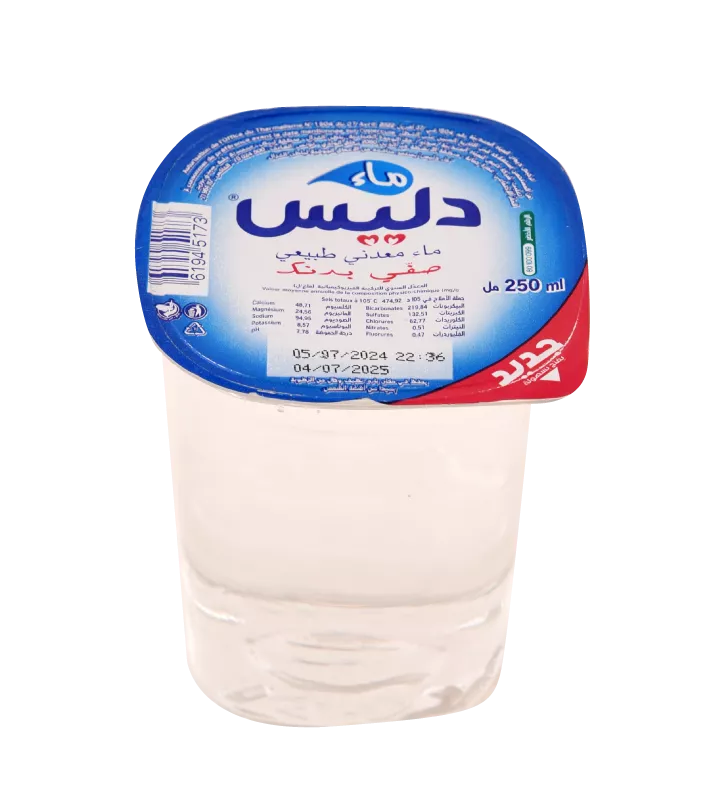
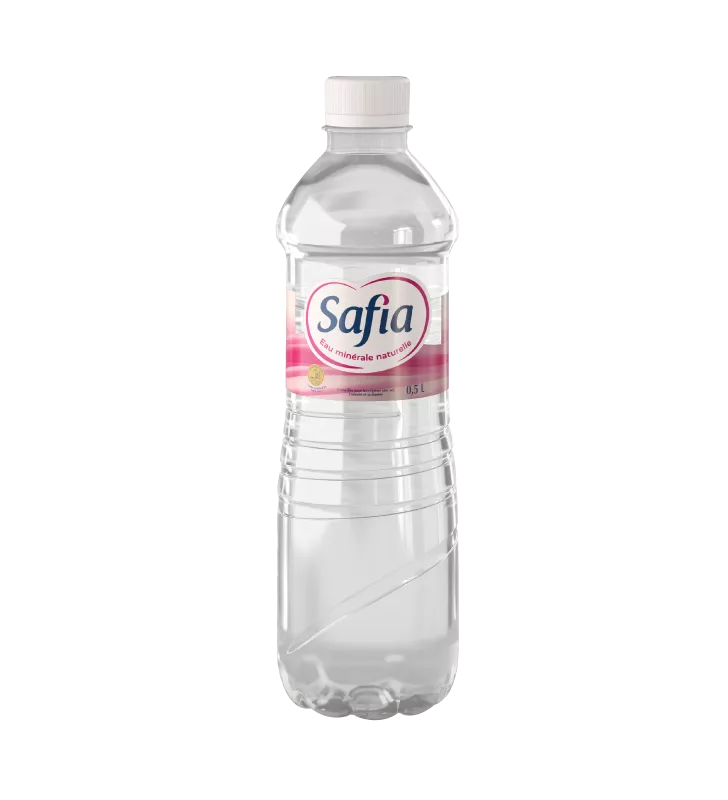
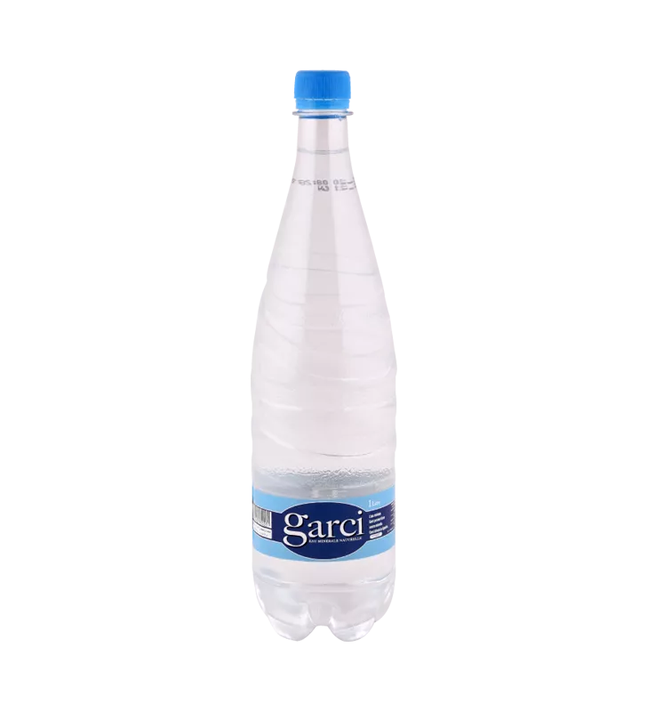
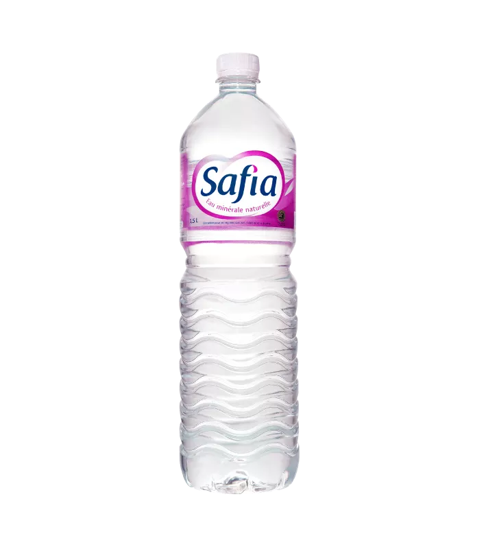
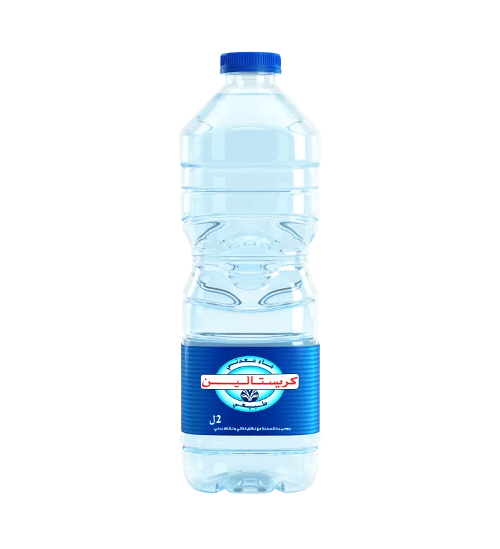
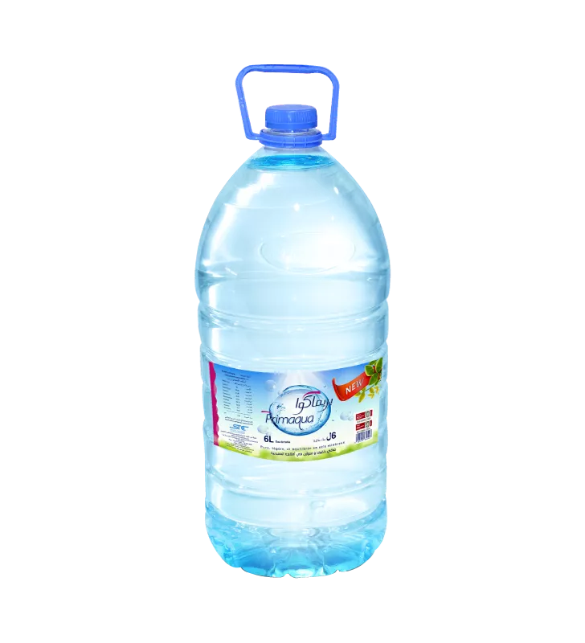
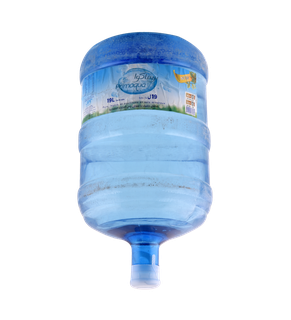

الاختيار « ≤ 0,75 لتر » يجمع قوارير 0,25 و0,5 لتر، و« ≥ 5 لتر » يجمع بيدونات 6 لتر والقوارير الكبيرة 19 لتر. الستيكة = علبة من 6 قوارير (12 للقوارير الصغيرة 50 صل)، والأحجام الكبيرة تُباع بالوحدة.
الماء المعدني الطبيعي — يأتي من عين جوفية محمية، وتركيبته المعدنية ثابتة ومضمونة. لا يُسمح بأي معالجة كيميائية.
ماء العين — جوفي وصالح للشرب طبيعيًا هو أيضًا، لكن تركيبته قد تتغير مع الوقت، وشروطه أقل صرامة.
الماء المعالَج (ماء المائدة) — ماء أصبح صالحًا للشرب بعد معالجته، مهما كان مصدره.
الماء الغازي — ماء فيه فقاعات، طبيعية (مثل Garci أو Aïn Oktor) أو مضافة.
التصنيف والتركيبات منقولة من جدول ديوان المياه المعدنية والاستشفاء بالمياه (هيكل رسمي تونسي)، نشره الدكتور المهندس عماد حسين — انظر المنشور (ماي 2024). تفاصيل كل علامة (الكالسيوم، الصوديوم، الحموضة…) في « التركيبة » على بطاقتها.
﴿وَجَعَلْنَا مِنَ الْمَاءِ كُلَّ شَيْءٍ حَيٍّ﴾ الأنبياء ٣٠
أسعار الماء في المغازات التونسية، نقارنها كل يوم. مجانًا ودون تسجيل. أسعار تقريبية نقرؤها في المتاجر الإلكترونية للمغازات الكبرى (Carrefour وGéant)، مع الأسعار التي تبلّغون عنها (المصادر مذكورة). بالنسبة للطلبية القادمة، السعر النهائي يحدّده المزوّد حسب المخزون المتوفر يوم التوصيل.
السهم ↓ يشير إلى المغازة الأرخص.
يبدأ السجلّ يوم 25 سبتمبر 2026، والمنحنى يطول يومًا بعد يوم.
حسب آخر قراءة، أرخص قارورة ماء عادي 1,5 لتر سعرها 0,610 د.ت (Bargou، Marwa وMelliti)، أي 3,660 د.ت للستيكة من 6 قوارير. الترتيب الكامل للعلامات يُحدَّث كل يوم في أعلى هذه الصفحة.
حسب آخر قراءة، أرخص ستيكة من 6 قوارير 1,5 لتر سعرها 3,540 د.ت في المغازات الكبرى (Bargou وMelina). حسب العلامة، ثمن ستيكة 1,5 لتر بين 3,540 د.ت و 4,920 د.ت. اختر « ستيكة » في أعلى الصفحة لترى كل الأسعار بالستيكة، علامة بعلامة ومغازة بمغازة.
في تونس، الستيكة هي علبة من 6 قوارير ماء (12 للقوارير الصغيرة 50 صل)، وهي الأكثر شراءً عند العائلات. في هذا الموقع، كل منتوج يعرض سعر القارورة وسعر الستيكة.
تُقرأ الأسعار آليًا كل يوم من المتاجر الإلكترونية للمغازات الكبرى في تونس (Géant Drive وCarrefour). هي أسعار تقريبية وقد تتغيّر حسب المغازة والتخفيضات.
الطلب غير مفتوح بعد. عند فتحه: تضيف منتوجاتك بزر +، تكتب رقم هاتفك وعنوانك (أو تحدّد موقعك بنقرة)، ثم ترسل الطلب على واتساب. نعود إليك بالسعر الجملي ومصاريف التوصيل لتؤكّد. الدفع عند التوصيل فقط، وإرسال الطلب لا يُلزمك بشيء.
حسب جداول ديوان المياه المعدنية (2024)، أقل ماء معبّأ أملاحًا في تونس هو Hayet (بقايا جافة 238 مغ/لتر)، ثم Jannet (272) وSabrine (303) وSafia Aïn Mizeb (308). الأكثر أملاحًا هما الماءان الغازيان Garci (1677 مغ/لتر) وAïn Oktor (1680 مغ/لتر). افتح « التركيبة » في بطاقة أي علامة للتفاصيل (الكالسيوم، الصوديوم، الحموضة…)، أو رتّب حسب نسبة الأملاح من القائمة في أعلى الصفحة.
الماء المعدني الطبيعي يأتي من عين جوفية محمية وتركيبته ثابتة ومضمونة دون أي معالجة. ماء العين جوفي وصالح للشرب طبيعيًا أيضًا، لكن تركيبته قد تتغيّر. ماء المائدة (المعالَج) يصبح صالحًا للشرب بعد المعالجة. استعمل أزرار معدني / ماء عين / معالَج في أعلى الصفحة لتصفية العلامات — التصنيف مأخوذ من الجدول الرسمي لديوان المياه المعدنية.
26 علامة تُباع في تونس: Safia، Sabrine، Marwa، Melliti، Garci، Cristaline، Fourat، Dima, Mira، Pristine، May، Jannet، Jektiss، Melina، Aqualine، Brima، Denya، Main، Palma، Rim, Vivian، Primaqua، Délice، Beya وTijen — مياه عادية وغازية.
ملاحظة، سعر يجب تصحيحه، علامة ناقصة، فكرة؟ اكتب لنا.
صوّت لمائك المفضّل! صوت واحد لكل شخص، والترتيب يُحدَّث كل ساعتين.
ليست المغازات الكبرى هي التي توصّل: ستطلب مباشرة من تجّار جملة ومخازن شريكة في جهتك، بأسعارهم الخاصة، مع التوصيل.
هكذا سيعمل الطلب:
الأسعار المعروضة في هذا الموقع هي أسعار المغازات الكبرى، للإرشاد فقط. السعر النهائي للطلبية هو سعر المزوّد: يتغيّر حسب المخزون المتوفر يوم التوصيل وقد يكون مختلفًا. تعرفه وتوافق عليه قبل أي توصيل.
أعلِمني عند الافتتاحرأيت سعرًا في مغازة؟ شاركه: بعد تثبّت آلي، يُنشر في بطاقة العلامة (مع تاريخه) وفي قناتنا على تيليغرام.